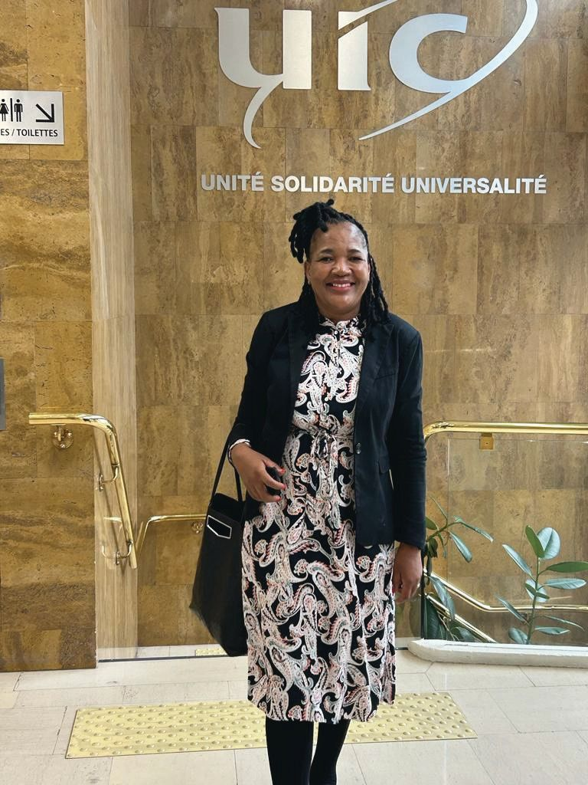

Mrs MA Makwela
Director · Railway Safety & Integrated Risk
Having worked across key state entities, Mrs Makwela brings extensive experience in Railway Safety Management, the development and implementation of regulatory tools, Risk Assessments and Railway Permit Management.
She has a proven track record in designing and implementing robust risk frameworks, ensuring regulatory compliance, and enhancing organisational resilience within high-risk, safety-critical industries. Her core strengths include risk identification, assessment and mitigation, complemented by strong stakeholder engagement skills that facilitate informed executive-level decision-making.